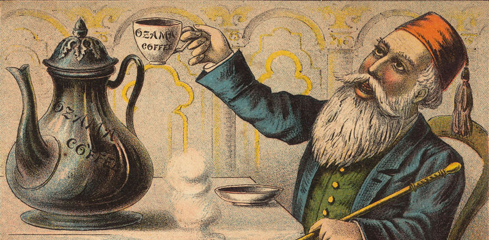

Dokumen tertulis yang paling tua tentang kopi ditemukan dalam catatan Al Razi (850-922) seorang ilmuwan muslim yang juga ahli kedokteran. Dia menyebut suatu minuman yang ciri-cirinya mirip kopi dengan sebutan bunshum. Catatan ini diperkuat oleh seorang ahli kedokteran setelahnya, Ibnu Sina (980-1037 ), yang menggambarkan sesuatu biji yang bisa diseduh dan berkhasiat menyembuhkan salah satu penyakit perut. Semua keterangan yang diberikan Ibnu Sina merujuk pada ciri-ciri kopi yang kita kenal saat ini. Dia menyebut minuman tersebut bunshum dan bijinya dengan nama bun.
Kopi menjadi komoditas ekonomi penting di dunia islam. Minuman kopi sangat populer di kalangan para peziarah di kota Mekah, meskipun pernah beberapa kali dinyatakan sebagai minuman terlarang. Para peziarah meminum kopi untuk tetap terjaga ketika beribadah di malam hari.  Popularitas kopi semakin meluas di masa kekhalifahan Turki Ustmani. Di ceritakan minuman kopi menjadi sajian utama di setiap perayaan di Istambul. Di masa ini juga kopi mulai disukai orang-orang Eropa.
Di awal tahun 1600-an para pedagang di Venesia membeli kopi dari pelabuhan Mocha di Yaman. Dari tempat ini menyebar ke daerah Eropa lainnya. Kemudian pada tahun 1668 kopi mulai menyeberang samudera Atlantik dan tiba di New York, kala itu masih menjadi kooni Belanda.